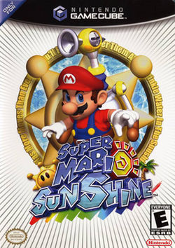

Gamecube

Release Date: August 26, 2002
Super Mario Sunshine was once again the only true Mario title released for the Gamecube. This game still has the same fundamentals, but with some new gameplay mechanics that take center stage. The world is covered in an oil like goo that Mario needs to wash away with his new Watergun backpack. The backpack allows Mario to boost his jumps and perform new maneuvers. The game also introduced a new main villain who still kidnapped Peach. Yoshi makes an appearance and is part of the game towards the end. The game sold fairly well, but seems to have a stigma in part because it was on the Gamecube.
Once again one real Mario game and more spin-off titles. This generation we also saw Luigi get his own game in Luigi's Mansion which was a Gamecube launch title.
- Super Smash Brothers Melee
- Mario Party 4
- Mario Party 5
- Mario Party 6
- Mario Party 7
- Mario Power Tennis
- Mario Kart: Double Dash
- Mario Golf: Toadstool Tour
- Paper Mario: The Thousand Year Door
- Mario Superstar Baseball
- Super Mario Strikers